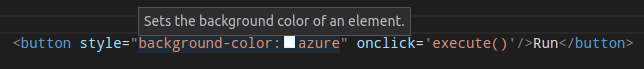

VS Codeは初めからHTMLプログラミングの基本的なサポートを提供しています。拡張機能をインストールすることでより多くの機能性を得ることができます。
IntelliSense
HTMLで入力するとき、HTMLのIntelliSenseを介して候補を提供します。次の画像では、HTML閉じタグ要素 </ div>と候補された要素のコンテキストリストを確認できます。

また、要素、タグ、HTML 5で定義されるいくつかの値、Ionic、AngularJSタグのための候補も提供しています。
埋め込みCSSとJavaScriptでも動作します。ただし、ScriptとStyleのIncludeでは実行されないことに注意してください。言語サポートはHTMLファイルの内容のみを参照します。
⌃Space (Windows, Linux Ctrl+Space) を押すことでIntelliSenseをいつでも起動できます。
また、ビルトインの補完プロバイダーをアクティブにするかどうかを制御することもできます。候補を表示したくない場合は、 ユーザーまたはワークスペース設定で次を設定します。
|
ホバー
HTMLタグや埋め込みStyle、JavaScriptの上にマウスを移動すると、カーソルの下にシンボルの詳細を表示します。

検証
HTMLの言語サポートは、埋め込まれたすべてのJavaScriptとCSSの検証を行います。
次の設定で検証をオフにすることができます:
|
HTMLのフォーマット
HTMLのソースコードの書式を整えるために、⌘K ⌘F (Windows, Linux Ctrl+K Ctrl+F)を押して選択範囲をフォーマットすることができます。
Tip: フォーマッタは
html.format.unformatted設定に登録しているタグをフォーマットしません。埋め込みJavaScrirptはscriptタグを除外していない限り、フォーマットされます。Tip: ユーザーとワークスペース設定でHTMLのフォーマッターを構成できます。
Emmet
Emmetスニペットの拡張機能をサポートしています。Emmetの略語を展開するにはTabを押します。

Tip: 有効な略語については(https://docs.emmet.io/cheat-sheet)のHTMLセクションを参照してください。
HTML Emmetの略語を他の言語で使用したい場合はEmeet構文プロファイル(html, cssなど)をemmet.syntaxProfiles設定に関連付けることでできます。この設定はlanguage idを使用してEmmetプロファイルに関連付けます。
たとえば、JavaScript内でEmmet HTML略語を使用するには、次のようにします:
|
またUser Defined Snippetsもサポートしています。
次のステップ
次を見てください:
- CSS, Less and Sass - VS Code has first class support for CSS including Less and Sass.